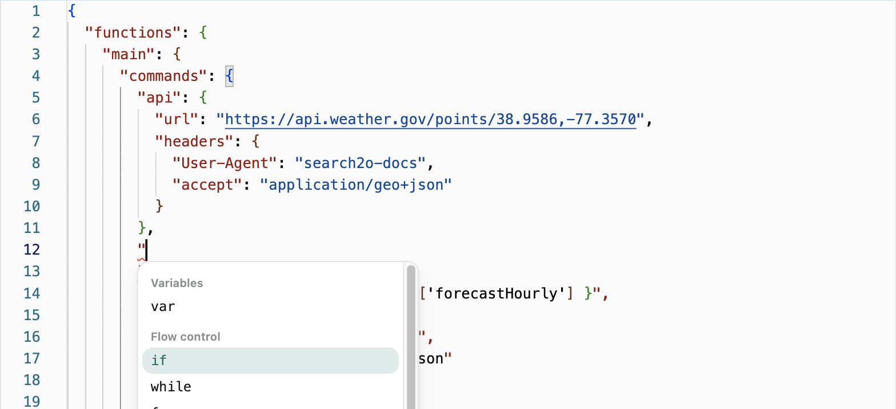
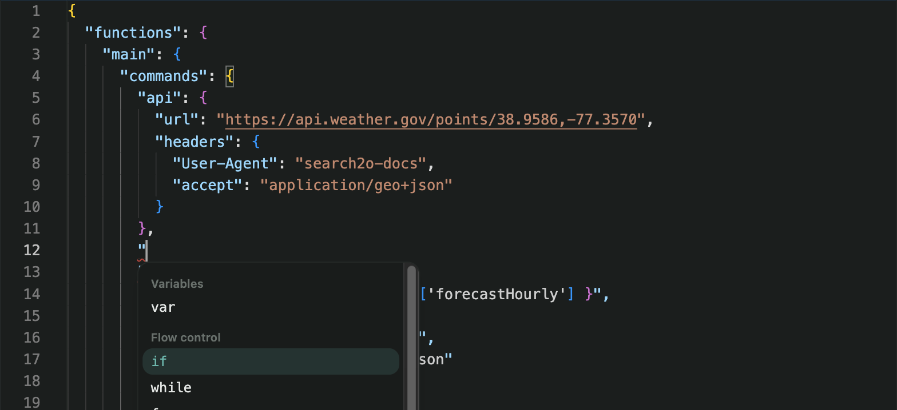

Agent editor
An agent is written as a definition: a JSONC document with a functions object, each function holding the commands it runs. The Agent definition editor on the draft page is where you write it. The editor is built on Monaco, the editor inside Visual Studio Code, and it knows the Search2o agent language, so it suggests what comes next and points out mistakes as you type.
What the editor knows
The editor learns the agent language from the agent schema that the cloud publishes: the same schema that validation checks your agent against. The schema covers every command, the fields each command takes, what type each field holds, and a sentence describing each one. So a command or field added to Search2o appears in the editor at once, and what the editor suggests is what validation accepts.
The schema is loaded the first time you open the editor and kept for the rest of the session. If the schema cannot be loaded, the editor still works as a plain JSON editor, without the suggestions and checks described below.
Adding a command
Inside a function's commands block, start a new line and type ". A list of every command allowed there opens, grouped by what it does:
| Group | Commands |
|---|---|
| Variables | var |
| Flow control | if, while, for, break, continue, func, return, parallel |
| LLM interaction | prompt, llm, memory |
| External systems | api, db |
| Deep agents | search, invoke |
| Human-in-the-loop | ask |
| Agent output | output |
| Agent termination | end, fail |
| Observability | progress, trace, log |
Keep typing to filter the list. Up and Down move through it, and the box under the list describes the highlighted command. Enter, Tab or a click inserts the command; Escape closes the list. The list shows only the commands allowed where you are typing, and opens as tall as the window allows.


commands lists the commands allowed there, grouped as in the reference.Choosing a command inserts it ready to fill in, with the fields you will almost always need: if arrives with condition, then and else; for with iter, loopVar and do; api with profile, path, queryParams and body; invoke with agent and inputs. Each field gets a starter value to replace: a Python expression field gets "{ }", a block of commands {}, a list of objects one empty object, a field with a fixed set of values its first value, and a field with a default that default. A block cannot hold the same key twice, so when the block already has a var, the next one is inserted as var.1, then var.2. The command is indented to match its surroundings, a comma is added to the previous entry if it needs one, and the cursor lands where you type next.
Suggestions as you type
Everywhere else a key belongs, the editor shows the next likely key as grey text ahead of the cursor. Tab or Enter accepts it; keep typing to ignore it. Inside a function: description, args, commands and onError. Inside a function argument: type, description and required. Inside a command: that command's fields, required ones first, so that a deleted condition is the first thing suggested back. Inside a list of objects, such as an ask's inputs: the fields each entry takes. Only keys that are not already there are suggested, and the suggestion appears even on an empty line, so an unfinished object shows what it is still missing.
Some suggestions come from your own agent rather than the schema. Inside parallel, each key names one of the agent's functions, so the editor suggests the functions this definition declares, with their descriptions; inside one of those entries, it suggests that function's arguments. These are read from the definition as you type, and they are suggestions, not restrictions: a name you type yourself is left alone, and validation decides whether it is right.
Two messages you may see. No suggestions here: you typed a key where the agent language does not describe one. An object goes here: you typed a quote directly inside a list whose entries must be objects; each entry starts with {.
Checks as you type
The editor checks the definition continuously and underlines problems: syntax errors, such as a missing bracket or a stray character, and anything the agent language does not allow, such as an unknown command or field, or a value of the wrong type. Hover over an underlined problem to read what is wrong. // and /* */ comments are allowed, and are not reported.
These checks catch most mistakes early, but they are not the final word. Validation checks the agent with your account's settings and runs it, and reports each problem with a sentence and its location.
Reading the definition
- Expressions stand out: a value written as a Python expression, like
"{ total + 1 }", is shown with bold braces and its contents in a monospace font. - Matching brackets share a colour, and indent guides show how blocks nest.
- A function or command folds with the arrow beside its line number.
- The editor grows with the definition rather than scrolling inside a box; the page scrolls instead.
- The editor follows the GUI's theme, light or dark.
Formatting
Quotes and brackets close automatically as you type them. Pasted text and new lines are formatted as they go in. Format document reformats the whole definition with an indentation of two spaces.
The toolbar
The toolbar above the editor holds every action. Hover over a button to see its name and shortcut.
| Button | Shortcut |
|---|---|
| Find | ⌘F / Ctrl+F |
| Replace | ⌥⌘F / Ctrl+H |
| Find next, Find previous | |
| Toggle comment | ⌘/ / Ctrl+/ |
| Block comment | |
| Format document | ⇧⌥F / Shift+Alt+F |
| Word wrap on or off (on at the start) | |
| Line numbers on or off | |
| Indent guides on or off | |
| Go to line | ⌃G / Ctrl+G |
| Fold all, Unfold all | |
| Undo | ⌘Z / Ctrl+Z |
| Redo | ⇧⌘Z / Ctrl+Y |
Around the editor
- Save with Ctrl+S (⌘S on a Mac) from anywhere on the page, including while typing in the editor. Saved appears briefly beside the Agent definition heading.
- Validate with Ctrl+Enter (⌘⏎) from anywhere on the page except inside the editor, where that key belongs to the editor, and inside the Draft with AI box, where it sends the request; there, use the Validate/Trace button or click outside the editor first.
- Jump to a problem. Validation errors and lines in the validation output show where in the agent they happened, such as
main.commands.llm. Select one to scroll to that command and select the whole of it. If you have since removed or renamed the command, you are told so. - Two kinds of undo. The editor's own Undo steps back through your typing. Undo AI edit, beside the heading, steps back through changes made by Draft with AI, up to the last ten.
What the editor leaves to others
- Hovering shows a problem's message; the box under the command list describes each command, and the Docs icon answers questions about the language.
- Profile names, secret names and functions on your allowlist are typed, not suggested; validation checks that each one exists.
- The editor is a first line of defence. Validation in the cloud has the final say when you validate and publish.